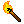
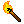
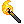
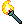
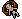
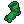
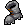
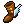
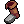
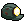

This section will discuss items, containing both some big-picture goals as well as specific remarks about most of the items. There will be some discussion that isn't really about items but doesn't have a better home.
General Remarks
A lot of what I will say in this section will hopefully make sense to anyone who has played a bit of Aria. However, there are some concessions to both hard mode as well as wrong music that will show their heads here.
Here is my list of goals I have while getting items:
- Get ring of peace
- Make sure I am able to beat as many bosses as possible
- Get to 3 damage
- Get as tanky as possible
- Aquire enough explosives to make Eli jealous
Finally, there is another thread that will go through my remarks below: keeping builds legible and reducing calculation is paramount. Having to manually remember "do I slide on ice?" or change how you calculate movement due to courage ring takes up important brain cycles that need to be spent staying on beat and zoning out the music in your ears.
With that said, onto the individual item discussions!
Torches
Below is my tier list for torchs. Order within a tier is relative ranking in that tier; e.g. I think that strength torch is the best torch overall. I will discuss the individual torches afterwards.
| Best torches | ,  |
| Other solid torches | ,  , , , , |
| Only take in zone 5 | ,  |
| Avoid at all costs |  |
The first thing that you likely noticed is that, the lower the torch's radius is, the stronger I think it is (with the exception of obsidian torch, which aggros enemies the same way a base torch does). The rub here is that it is incredibly important to control enemy aggro. There are straight up too many enemies in Aria hard, and aggroing everything in a massive radius is a recipie for suffering and dying. Especially punishing is aggroing sarcophagi that didn't need to be aggroed; avoiding doing so prevents an endless wave of enemies which have the potential to kill you. The reason that I am willing to take the higher radius torches in zone 5 boils down to "opening the wrong door in zone 5 is sufficiently punishing that I'm willing to accept the increased aggro," but I will not take such a torch if I know that I can make it through zone 5 without needing the torch, nor will I take such a torch after zone 5. Even if I do take such a torch, I am actively looking to ditch it when I get the chance.
The ranking within the radius 1 torches boils down to "how useful is the side effect of this torch?" Strength and walls provide real benefits and so are in the top tier; the benefit provided by foresight is much more minor. Infernal is below base because actively using infernal torches requires you to expend mental energy to remember that you have it. Moreover, if you forget that you have it, you can easily kill yourself with it. If you are both good at remembering you have the torch and good at using it, I would put it roughly on par with walls.
Armor
There aren't enough different armors in Aria's pool to merit a tier list. Here are the main guidelines I have with armor:
- With three or more damage outside of armor, glass armor is better than the gi. With less than three damage outside of armor, the gi is better than heavy glass armor.
- With armor, you should never check the boss black chest. Without armor, you should always check it.
- Unless you are absolutely loaded with money and have filled out the rest of your build, you should never conjure armor. It it much easier to guarantee it from a boss black chest.
Shovels
This is another category where there's not much to say. Here is a short list of remarks:
- I avoid big digs. While +1 damage in the shovel spot is nice, the inability to control aggro and the fact that you can't funnel enemies through one tile paths is too much of a drawback.
- You can of course pick nits with the various other shovels, but in general, having one of the upgraded shovels is noticably better than not having one and switching between them is a much smaller change.
- You need to be a smidge careful with the glass shovel to not get into the loop of "get hit → shovel breaks → forget that the dig you planned doesn't work → miss beat."
- In zone 5, upgraded shovels can be a downside; I prefer to have some amount of mapping if I take one then.
Rings
The rings break down into three categories. I'll talk about each category in turn.
The best ring:

Peace is hands down the best ring to get. It despawns one enemy per room, as well as reduces bosses to their base form. These are massive upgrades: the first change keeps the number of enemies manageable and makes it far less likely that you get swarmed, and the second one prevents you from having to deal with difficult dragons and makes minibosses die in far fewer hits. This importantly affects the minibosses in the boss rooms, which in turn greatly reduces how different hard mode bosses are from normal mode bosses.
The stronger but risky rings:

The specifics of these rings vary wildly, but they all do something that is powerful but changes how the game works. As a general guidance, if you are comfortable dealing with these rings then they are great. However, you do not want to be in a position where you are improvising calculations. Since each person is used to different things, it is hard to say "you should take this ring but avoid that ring" given that personal comfort is the key deciding factor here.
The weaker but safe rings: 
These rings in general don't provide as game-changing of effects as the rings above, which both has upsides and downsides. Fundamentally, most of these rings are fairly replaceable or weak. In general, gold, charisma, becoming, and luck exist as transmute fodder, might and shielding exist as one way to get a point of damage or add one hit to yourself, and mana and wonder are good if you are consistent about using spells well. All of these rings (even wonder) pale in comparison to what peace offers and live in the "fundamentally fine" category. Two final notes: actually having wonder is of course strong, but it's not really good enough to speculate on and I would swap out becoming for shielding or might without a second thought and would hold off on buying it if money is tight. Secondly, gold does have the unfortunate side effect of preventing the leprechaun from spawning if it hasn't already spawned so it's not a particularly good long term ring and should probably be swapped for other transmute fodder if you haven't seen the leprechaun.
Footgear
Just like rings, footgear breaks up into three categories.
Funny Feet: 
I mean, if you're completely comfortable with this, by all means, go ahead. If you aren't completely comfortable, stay away.
Floor Protection:
These are generally good, but if you forget you have them you can easily make a mistake. You should know what each of these does and doesn't protect from, and remember the movement implications of all of them. The glass slippers have a similar risk to the glass shovel mentioned above, as your build can change at an unexpected time. I personally like the floaty boots more than the other three because of the constant reminder that I have them from Aria's sprite.
Strength Boots:
This is a point of damage. If you need your second or third point of damage, this is great. If you don't, this is completely replaceable.
Headgear
Headgear split up into damage and utility. I'll talk about both categories in turn.
Damage: > >>>
Headphones get you to three damage instantly. Glass jaw does not. This is the difference between the two items, and why you (almost) always want headphones, even to the extent that you should switch off of glass jaw even when that pushes you down in damage. Glass jaw ties up one other slot in order to get to three damage, whereas headphones do not. As for sunglasses, they are functionally unusable. If you are completely used to them and can read literally every enemy off of it's shadow and eye color, then maybe you can talk yourself into "any port in a storm" but even then I wouldn't bother.
Utility: 
A lot of these pieces of headgear aren't really comparable, so they merit more individualized notes.
- Blast helm is really good; I would put it as the second best piece of utility headgear. Even if you have a better piece of headgear (i.e. something that gets you over three damage or the monocle) you should still at least try the helm on to get those sweet three bombs.
- Circlet of telepathy is a nice source of mapping if you are used to it. It can cause issues if you aren't used to it not aggroing things, but other than that it's a fine piece of headgear.
- You aren't running score. Don't bother with helm of greed. Ignore this comment if for some demented reason you are running score.
- The crown of teleportation is a point of tankiness. It can put you in an awkward spot if you aren't ready and isn't the greatest in bosses, but it's fine.
- Miner's cap is a nonbo with safe Aria play. Avoid it at all costs.
- Monocle is really good, and the major downside of it (aggroing spirits) is gone on Aria. This is the easiest way to get yourself peace and is a really nice item to keep for most of the run.
Spells
I will only give scattered remarks about various spells here.
- Bomb spell and shield spell glow up in Aria hard. Bomb spell is a recurring source of explosives to deal with sarcophagi, and shield spell is especially good when you don't have a build, as you can use it in boss fights to tank the boss while you clear out the minibosses.
- Basically every other spell is unchanged. If you are good at consistently using spells then they are a wise purchase, and if you aren't then they are less so a wise purchase.
- If you aren't good at using spells, then getting a damaing spell is probably worth it to open crates if you don't have shield and bomb.
- Remember that bosses are a lot harder here; it is likely worth it to play safer in x-3 and not use spells so that you have them for the boss than to push in x-3 and not have spells for the boss.
Miscellaneous points only (because good god there are a lot of these):
- If you want to use food to do subbeat stuff with trapdoors while you have wrong music playing, be my guest. I'm not your mother.
- Shurikens are criminally underrated. They are really good at killing bosses, and in particular provide a free kill on DB5 and DB4.
- Basically all the remarks about spells above apply to tomes.
Charms
They're good. They have no slot cost. Take them.
Disclaimers: these comments may not apply to grenade charm if you aren't used to it. Additionally, the author would like to remind everyone that a lucky charm is not complete immunity to bats; it is still possible to get hit by a bat if there are no other legal moves for that bat. Tread carefully around batcaves.